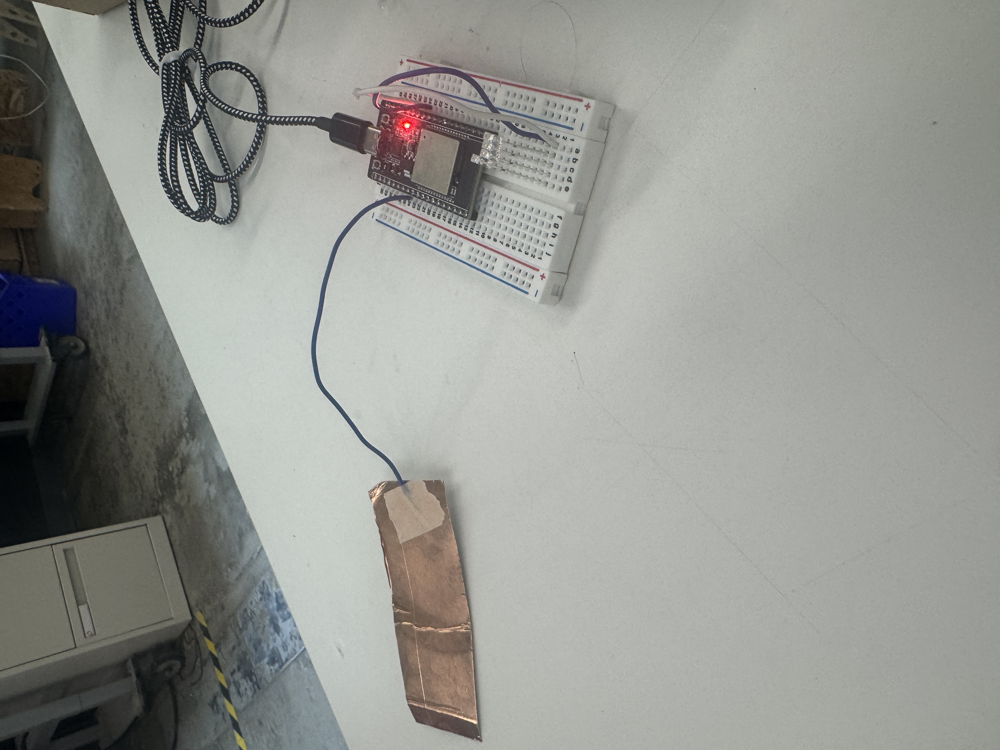
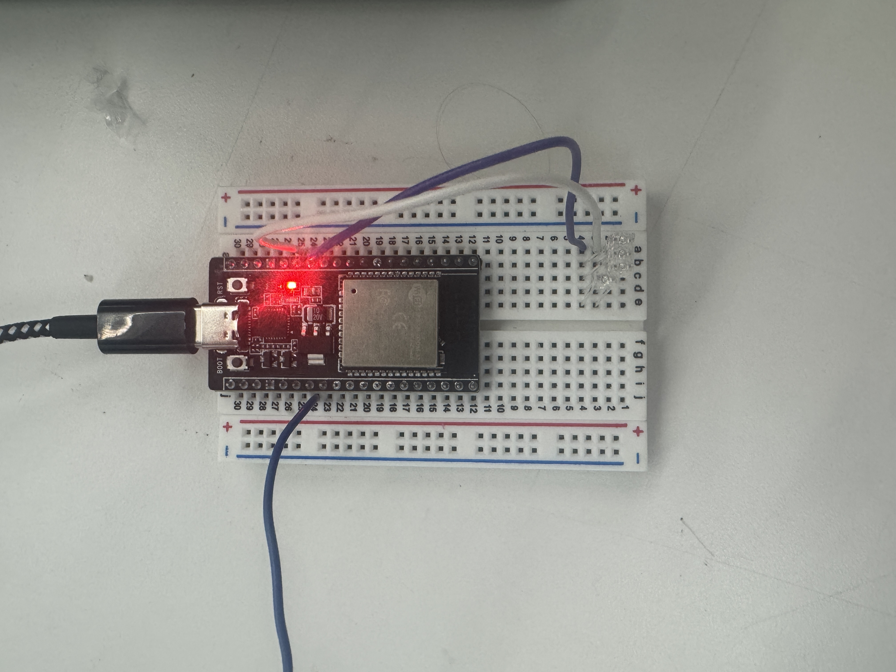

<div class="textcontainer">
<p class="margin"> </p>
<h3>Week 4: Microcontroller Programming</h3>
<h4>Touch Sensor-Activated LEDs with the ESP32</h4>


<img src="./week4gif.gif" width="300">
<p>
This week I wanted to try something different. I noticed the ESP32 has dedicated touch-capable GPIO pins, and I got curious about using them for a simple project. I made a basic touch sensor that turns on multiple LEDs using GPIO pins.
</p>
<h5>Steps I Took:</h5>
<ol>
<li>First, I looked at the ESP32 wiring diagram to identify the <code>TOUCH</code> capable pins.</li>
<li>I attached a piece of copper tape to one of the touch pins (e.g. <code>GPIO4</code>) using a wire.</li>
<li>Then I wired up 4 LEDs to GPIO pins with resistors (220Ω), with their cathodes going to GND.</li>
<li>I used <code>touchRead()</code> in Arduino to check the touch pin value. If the value dropped below a threshold (30), I turned the LEDs on.</li>
</ol>
<h5>Code Snippet:</h5>
<pre><code class="language-arduino">
#define TOUCH_PIN T0
#define LED_PIN 12
int threshold = 30;
void setup() {
Serial.begin(115200);
pinMode(LED_PIN, OUTPUT);
digitalWrite(LED_PIN, LOW);
}
void loop() {
int touchValue = touchRead(TOUCH_PIN);
Serial.println(touchValue);
if (touchValue < threshold) {
digitalWrite(LED_PIN, HIGH);
} else {
digitalWrite(LED_PIN, LOW);
}
}
</code></pre>
<h5>Wiring Diagram:</h5>
<img src="Circuit Diagram.png" width="600px" alt="Circuit Diagram showing ESP32-C3 with touch sensor and LEDs">
</div>